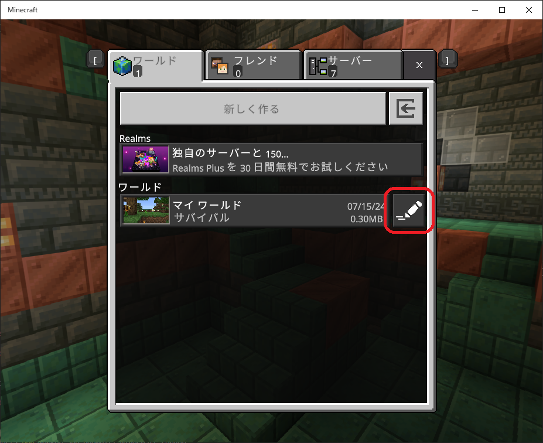
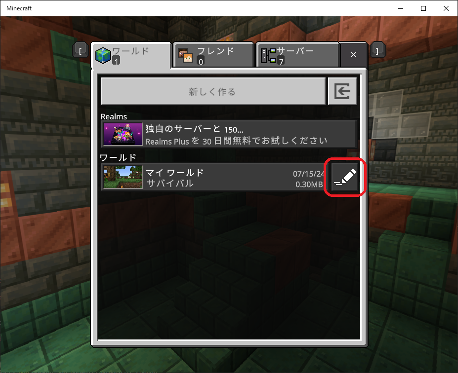

【ビヘイビアパック適用その１】
はじめに
ここでは連携しているリソースパックがないパターンの適用方法について
Websocketサーバーはホストプレイでのみ利用可能なのでPC内の以下のフォルダへコピーして使います。
ゲームデータのホームフォルダ
contents-project環境に同梱しているビヘイビアパックを例に挙げて適用方法を説明します。Websocketサーバーはホストプレイでのみ利用可能なのでPC内の以下のフォルダへコピーして使います。
ゲームデータのホームフォルダ
C:\Users\<PCのユーザー名>\AppData\Local\Packages\Microsoft.MinecraftUWP_8wekyb3d8bbwe\LocalState\games\com.mojang
ビヘイビアパックをコピー
プロジェクト環境の
※実際はリソースパックと連携しているファイルも含まれていますが、説明のため対象のディレクトリは以下から外してあります。
カスタムビヘイビアパックの内容
上記の

app/packs/behavior_packsフォルダ内には以下の構成でファイルが格納されています。manifest.jsonには、ビヘイビアパック名「family-customize」で登録してあります。※実際はリソースパックと連携しているファイルも含まれていますが、説明のため対象のディレクトリは以下から外してあります。
カスタムビヘイビアパックの内容
/for-family
manifest.json マインクラフトがビヘイビアパックを認識するための情報
pack_icon.png ビヘイビアパックのアイコン
/functions functionコマンド定義
/loot_tables ルートテーブル定義
上記の
for-familyフォルダを以下のゲームデータのフォルダへコピーします。
ワールドを新規で作成する時
以下のワールド作成画面から左メニューの「ビヘイビアーパック」を選択すると右側に
そして
すると以下の画面のようにダイアログが表示されるので「続ける」をクリックします。
※今回のビヘイビアパックでは対応するリソースパックを作っていないので以下のような確認ダイアログが表示されますがそのまま継続しても大丈夫です。
以下のような表示が出たら設定完了です。
あとは「作成」ボタンを押して新しいワールドへログインしてください。
family-customize（今回コピーしたカスタムビヘイビアパック）というビヘイビアパックが表示されます。そして
family-customize項目右側の「有効化」ボタンをクリックします。すると以下の画面のようにダイアログが表示されるので「続ける」をクリックします。
※今回のビヘイビアパックでは対応するリソースパックを作っていないので以下のような確認ダイアログが表示されますがそのまま継続しても大丈夫です。
以下のような表示が出たら設定完了です。
あとは「作成」ボタンを押して新しいワールドへログインしてください。
既存のワールドに適用する時
以下のワールド選択画面から今回のカスタムビヘイビアパックを適用するワールドの鉛筆マークのボタンをクリックします。

ワールド設定画面の左側のメニューから「ビヘイビアーパック」をクリックします。

右側の「マイパック」プルダウン項目を開いて
すると以下の画面のようにダイアログが表示されるので「続ける」をクリックします。
※今回のビヘイビアパックでは対応するリソースパックを作っていないので以下のような確認ダイアログが表示されますがそのまま継続しても大丈夫です。
以下の画面上部に出ているような「family-customizeがアクティブ化されました」と表示が出たら設定完了です。
右側の「使用中」のプルダウン項目を開くと

ワールド設定画面の左側のメニューから「ビヘイビアーパック」をクリックします。
右側の「マイパック」プルダウン項目を開いて
family-customizeのビヘイビアパックを選択すると、その下に「有効化」ボタンが表示されますのでそれをクリックします。すると以下の画面のようにダイアログが表示されるので「続ける」をクリックします。
※今回のビヘイビアパックでは対応するリソースパックを作っていないので以下のような確認ダイアログが表示されますがそのまま継続しても大丈夫です。
以下の画面上部に出ているような「family-customizeがアクティブ化されました」と表示が出たら設定完了です。
右側の「使用中」のプルダウン項目を開くと
family-customizeのビヘイビアパックが最上部に適用されている事が確認できます。family-customizeのビヘイビアパックを再び選択すると「無効化」ボタンが表示されますので、これをクリックすると有効化した後でも無効にする事ができます。ビヘイビアパックを更新する時
一度カスタムビヘイビアパックが適用されたワールドでは、その後ビヘイビアパックを更新しようとしてもゲーム画面の操作では更新できません。
更新されたカスタムビヘイビアパックを以下のワールドデータへ直接上書き、あるいは入れ替えをしてからマインクラフトを再起動すると適用されますので、新しいワールドを作らずに保存された構造物等をそのまま利用したい場合には便利です。
ワールドデータが保存されているフォルダ
上記のフォルダには以下のようにワールド単位でフォルダが保存されていますが、そのままではフォルダ名がエンコードされていてどのワールドデータなのか区別がつきません。
そこで各フォルダの中には
もし一意の名前を付けていない場合はゲーム画面からワールド名を変更できますので一度その操作を行ってから再度確認するのがいいでしょう。
以下のワールド一覧画面にある鉛筆マークのボタンをクリックするとワールドの設定画面が開きますので、左メニューの「設定を編集」⇒「ゲーム」をクリックするとワールド名を編集する項目が右側に表示されます。
更新対象のワールドフォルダが特定できたらその配下に
更新されたカスタムビヘイビアパックを以下のワールドデータへ直接上書き、あるいは入れ替えをしてからマインクラフトを再起動すると適用されますので、新しいワールドを作らずに保存された構造物等をそのまま利用したい場合には便利です。
ワールドデータが保存されているフォルダ
C:\Users\<PCのユーザー名>\AppData\Local\Packages\Microsoft.MinecraftUWP_8wekyb3d8bbwe\LocalState\games\com.mojang\minecraftWorlds
上記のフォルダには以下のようにワールド単位でフォルダが保存されていますが、そのままではフォルダ名がエンコードされていてどのワールドデータなのか区別がつきません。
そこで各フォルダの中には
levelname.txtというワールド名が記載されたファイルが存在しますので、直接ファイルを開いて確認するかテキストエディタのgrep機能等で検索して確認する方法もあります。もし一意の名前を付けていない場合はゲーム画面からワールド名を変更できますので一度その操作を行ってから再度確認するのがいいでしょう。
以下のワールド一覧画面にある鉛筆マークのボタンをクリックするとワールドの設定画面が開きますので、左メニューの「設定を編集」⇒「ゲーム」をクリックするとワールド名を編集する項目が右側に表示されます。
更新対象のワールドフォルダが特定できたらその配下に
behavior_packsフォルダがありますので、その中を上書きするか入れ替えるかしてからマインクラフトを再起動してください。